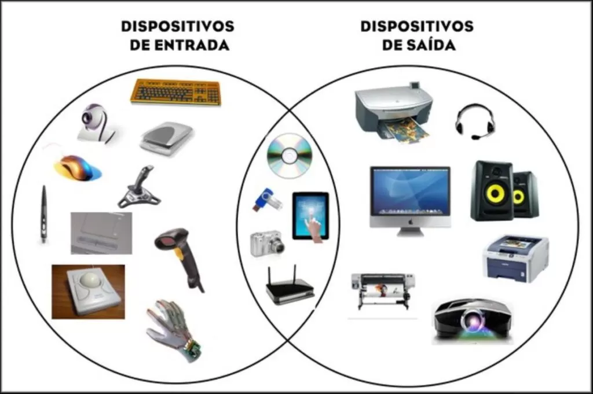

periféricos entrada e saídaPerifericos entrada e saída
Dark Mode is OFF
Dispositivos e periféricos entrada e saída
Programadora de imformatica_1 ano
Aluna:Bianca Rei
o que é?
Dispositivos periféricos são quaisquer dispositivos auxiliares que se conectam e trabalham com o computador para colocar informações ou obter informações dele.
Um dispositivo periférico também pode ser referido como periférico externo, periférico integrado, componente auxiliar ou dispositivo de E/S (entrada / saída).
Geralmente, a palavra periférico é usada para se referir a um dispositivo externo ao computador, como um digitalizador, mas os dispositivos localizados fisicamente dentro do computador também são tecnicamente periféricos.
Os dispositivos periféricos internos também são chamados de periféricos integrados.O conceito do que exatamente é periférico é, portanto, um tanto fluido. Para um computador desktop, um teclado e um monitor são considerados periféricos você pode conectá-los e desconectá-los facilmente e substituí-los se necessário. Para um laptop, esses componentes são integrados ao sistema do computador e não podem ser removidos facilmente.
No entanto, embora muitas vezes não estejam diretamente envolvidos com a função principal de um computador, isso não significa que não sejam considerados componentes necessários.

Tipos de dispositivos periféricos?
Os dispositivos periféricos são classificados como um dispositivo de entrada ou um dispositivo de saída, e alguns funcionam como ambos.
Entre esses tipos de hardware estão dispositivos periféricos internos e periféricos externos, sendo que um desses tipos pode incluir dispositivos de entrada ou saída.
Os dispositivos de entrada são aparelhos que ajudam o computador a obter os dados do usuário e inseri-los no sistema de computação. Eles são capazes apenas de enviar dados, e não de receber.
É o hardware que retira os dados através da ação do usuário e processa as informações. Por exemplo, quando você digita em um teclado, ele capta a informação que você quer passar e a manda para o computador de modo que conseguimos ver.
Esses dispositivos devem ter uma modalidade na entrada. Ou seja, algo que os conecte ao computador, como um cabo ou conexão wireless.
Teclado
Scanner
Microfone
Mouse
Mesa digitalizador
Teclado
Digitalizador de imagem
Leitor de código de barras
Os dispositivos de saída desempenham um papel significativo na informação, transformando os dados que estão no computador em uma linguagem identificável para o receptor.
Por exemplo, sempre que tocamos uma música no computador, ele processa o arquivo e faz com que o som saia pelos alto-falantes. Assim, podemos ouvir. Outro exemplo é o uso da impressora, que é capaz de transformar um arquivo digital em algo físico.
Monitor
Impressoras
Projetores
Caixa de som
Auto-falantes
O periférico de entrada e saída é conhecido como Input/Output device,alguns dispositivos funcionam tanto de entrada como saída. Estes podem tanto receber dados de usuários ou de outro dispositivo como também enviar dados para outro dispositivo.
Um exemplo desse tipo de dispositivo são as unidades de CD-RW. Estes recebem dados de um computador (entrada) para copiar em um CD gravável, mas também enviam dados contidos em um CD (saída) para um computador.Outros exemplos incluem pen drives, modems, câmeras e tablets.